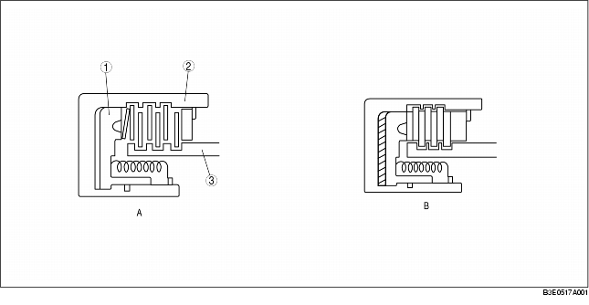
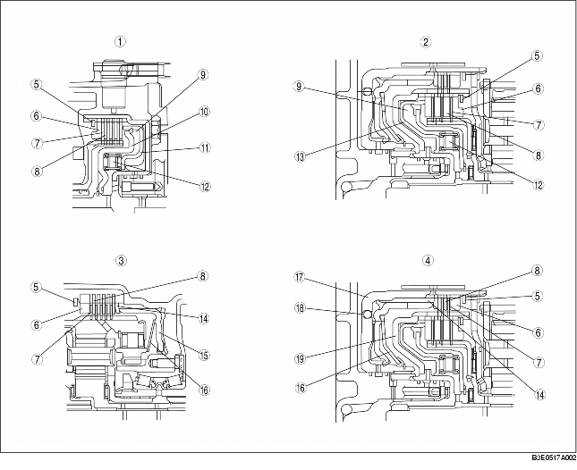

Forward clutch, 3-4 clutch, reverse clutch, low and reverse brake operation
• The basic structure is as shown in the figure below. In figure A, the fluid is in the clutch plates (drive plates, driven plates) and the power is not transmitted because of the fluid slippage on each plate. Figure B shows the clutch condition with the hydraulic pressure acted on the piston; the drive plates and the driven plates are pressed tightly together to transmit the clutch drum rotation speed to the hub. When the hydraulic pressure in the piston is drained, the clutches are separated because of the return spring and return to the condition in figure A.

• The dished plates used for the reverse clutch and the low and reverse brake reduce the shock caused by the sudden clutch engagement. The piston check ball built in the 2-4 brake drum (reverse clutch) drains the ATF only during freewheel to prevent the hydraulic pressure from increasing to half-engage the clutches because of the residual ATF. In the forward clutch and the 3-4 clutch, the centrifugal balance chamber is installed opposite the general clutch chamber. The centrifugal balance chamber is always filled with the ATF from the exclusive lubrication passage of the turbine shaft.
